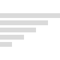

Visualise the inner workings of sorting algorithms at play.
Learn about how these algorithms work and explore their complexity.

See the code behind the algorithm in 6 popular programming languages.
Welcome!
What is a Sorting Algorithm?
In programming, we need to store large collections of data and sometimes we want to sort this data. It could be a list of years which we want to sort in order, or a list of names we want to sort alphabetically.
We use a Sorting Algorithm to achieve this.
But why are there multiple?
Long story short, each algorithm is better than the others in